1. 사진을 캐리커처로
사진을 올리고 스타일을 고르면, 로그인된 ChatGPT 웹을 Playwright로 조작해 캐리커처를 그립니다. 프롬프트를 고쳐 보내거나, 그린 그림에서 고칠 점을 적어 이어서 고칠 수 있습니다.
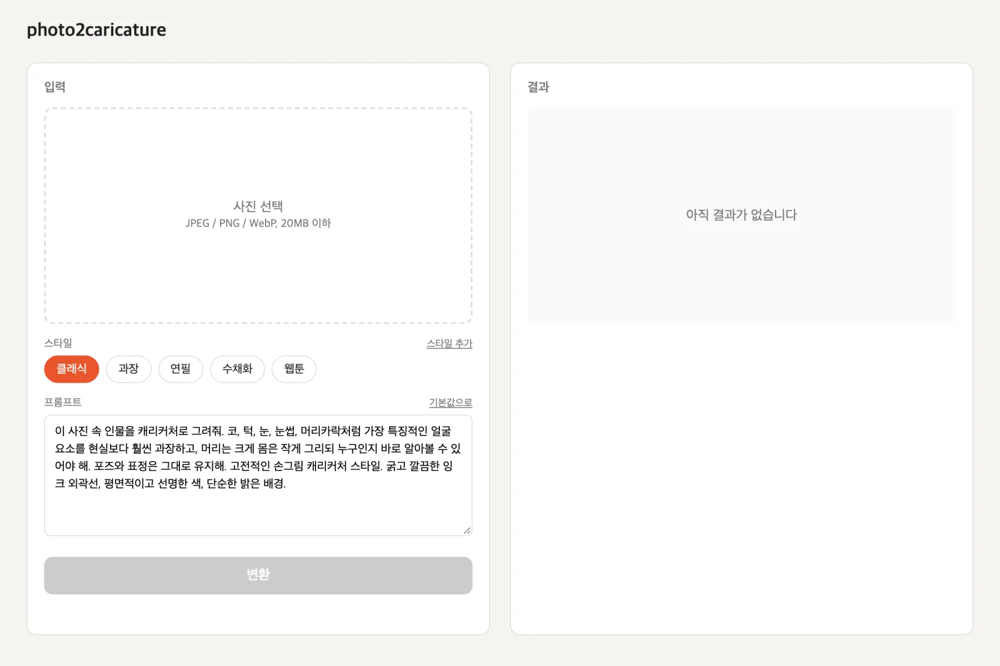
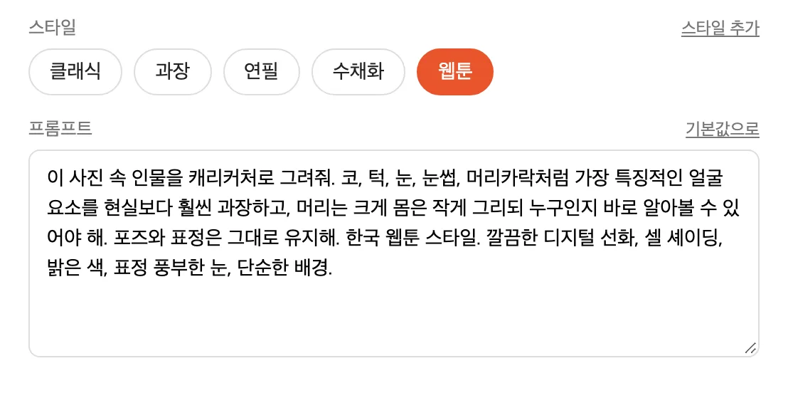
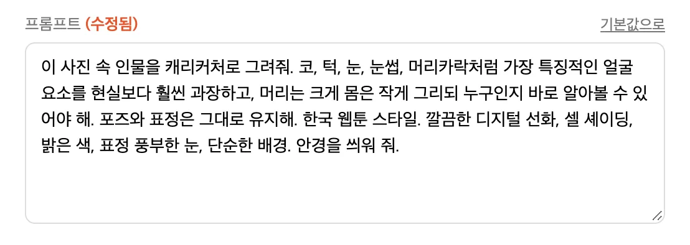
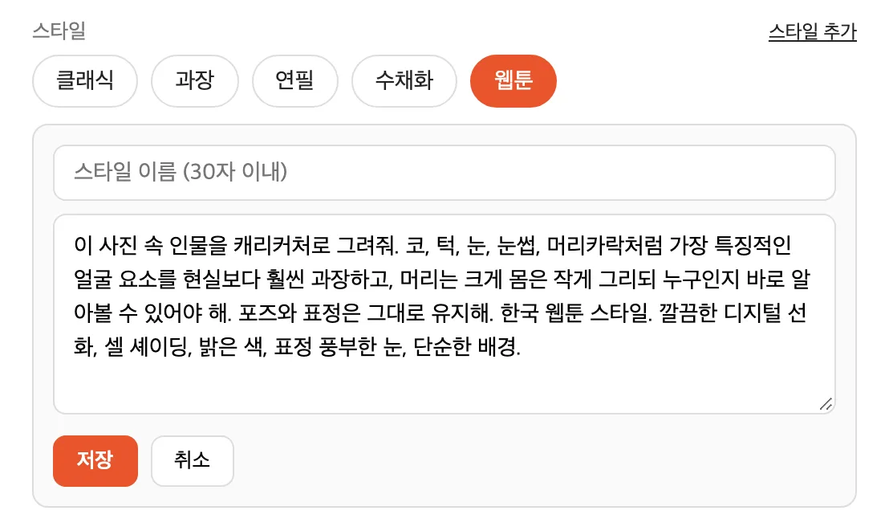
인물 사진을 캐리커처로 그리고, 그 캐릭터를 빙글빙글 돌려 볼 수 있는 3D 모델로 만드는 도구입니다. 물건·공간 사진 한 장도 됩니다.

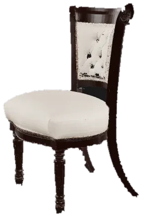
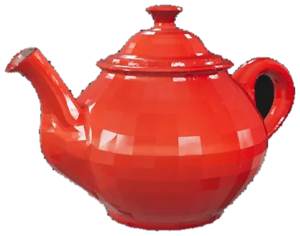
사진을 올리고 스타일을 고르면, 로그인된 ChatGPT 웹을 Playwright로 조작해 캐리커처를 그립니다. 프롬프트를 고쳐 보내거나, 그린 그림에서 고칠 점을 적어 이어서 고칠 수 있습니다.




앞·왼쪽·뒤·오른쪽 그림 넉 장을 만듭니다. 정면은 새 대화에서 그리고, 나머지 셋은 한 턴어라운드 시트에서 잘라 내서 모습이 서로 어긋나지 않게 합니다.
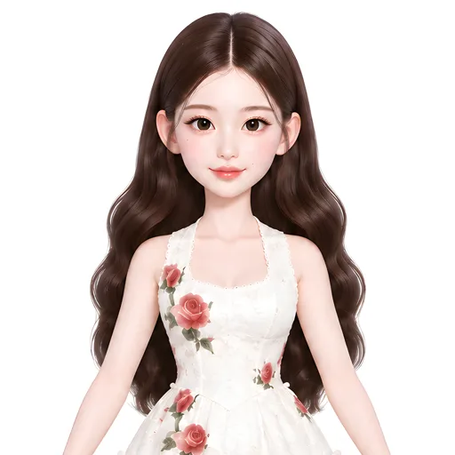
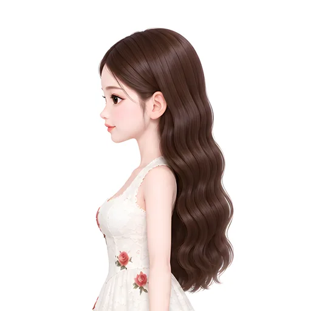
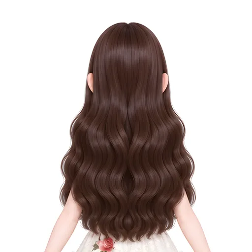
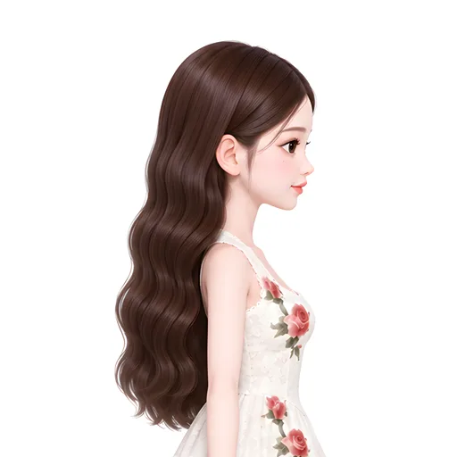
넉 장에서 배경을 떼어 Hunyuan3D-2mv로 형상을 만들고, 각도별 그림을 메시에 투영해 텍스처를 입힙니다. 결과는 GLB 한 파일입니다.
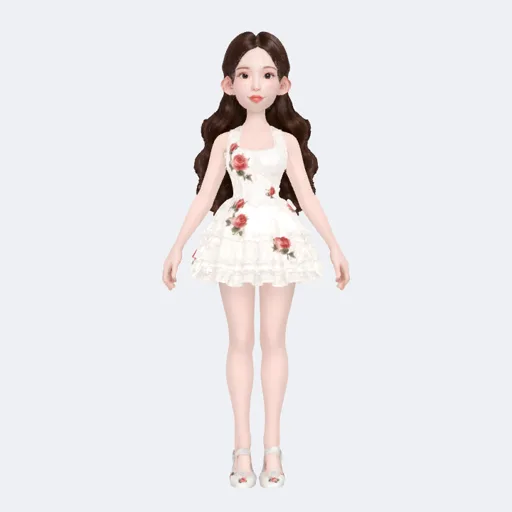
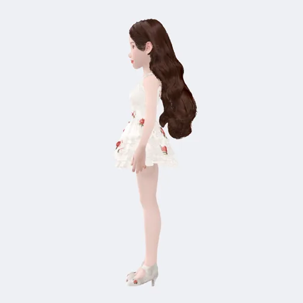
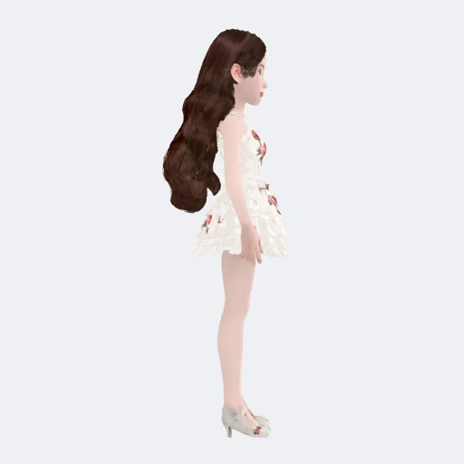
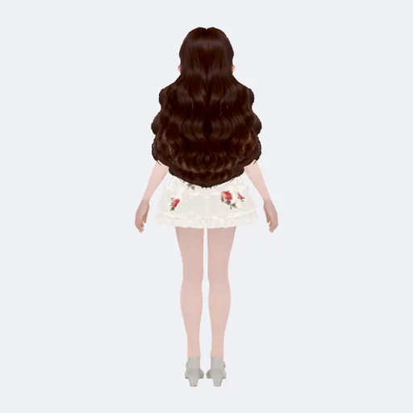
겹친 조각을 표면 텍스처에 굽고(flatten), 코끝·눈·속눈썹·머리카락·귀·옷을 명령 하나씩으로 손봅니다. 맥 미리보기용 USDZ도 함께 냅니다.
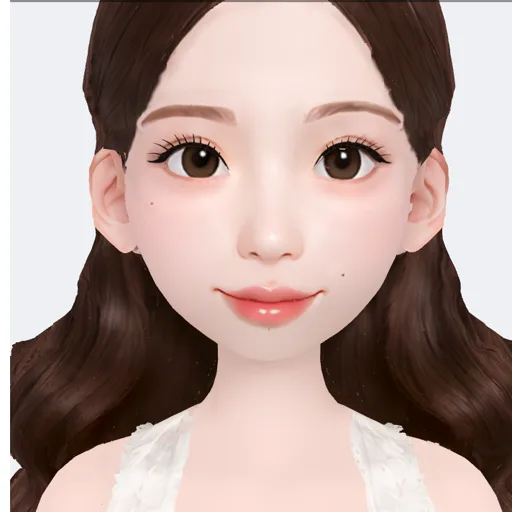
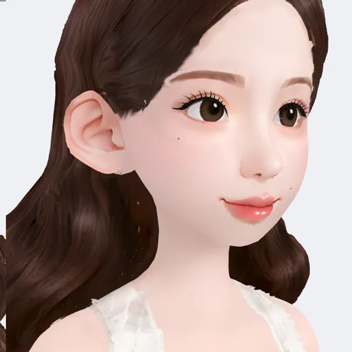
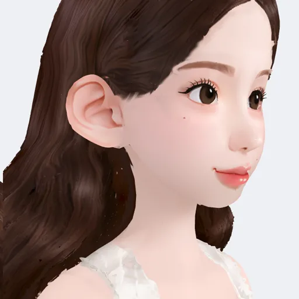
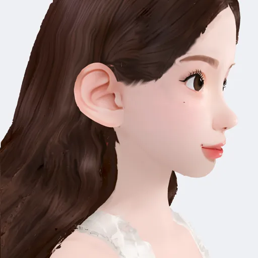
사진에서 배경을 떼어 내고 360° 메시를 만듭니다. 삼각형 20만 개와 2048px 텍스처가 기본값입니다.
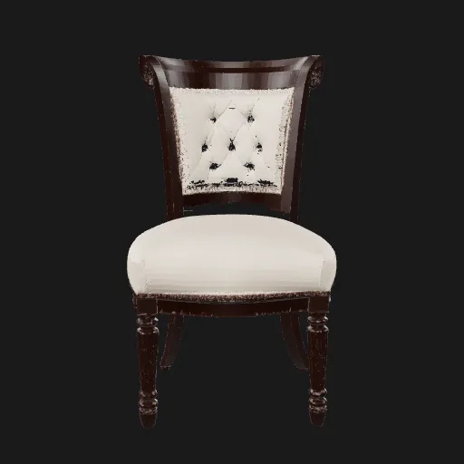
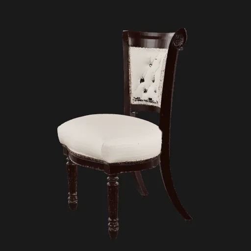
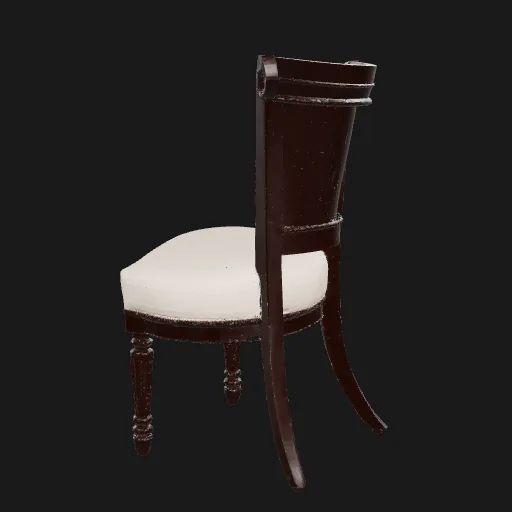
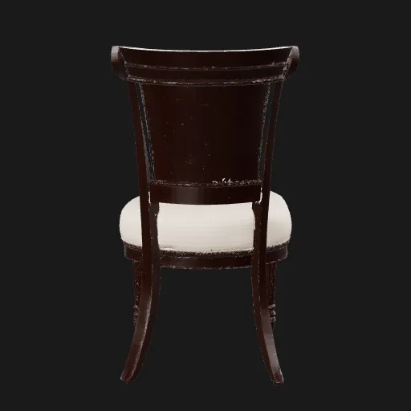
사진에 안 나온 뒤쪽까지 만듭니다. 결과는 PBR 텍스처가 붙은 GLB 한 파일입니다.
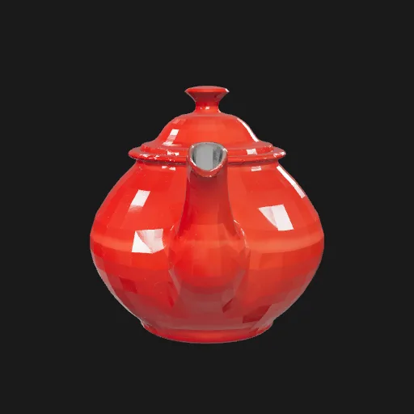
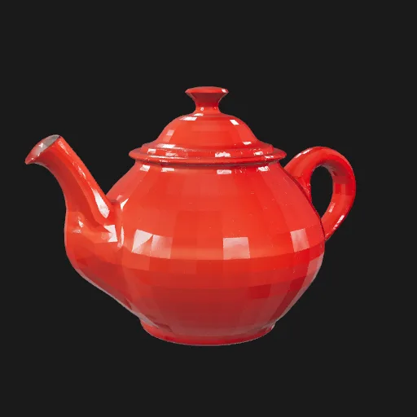
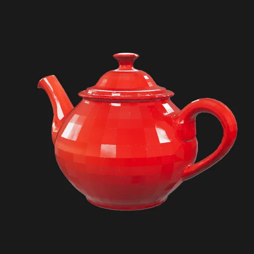
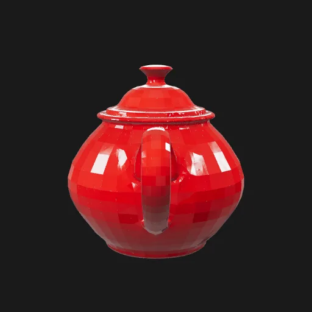
공간 사진은 깊이를 재서 카메라 기준 장면 메시로 만듭니다. 실내·실외 중 하나를 고릅니다.
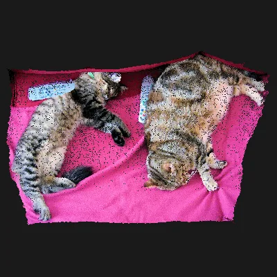
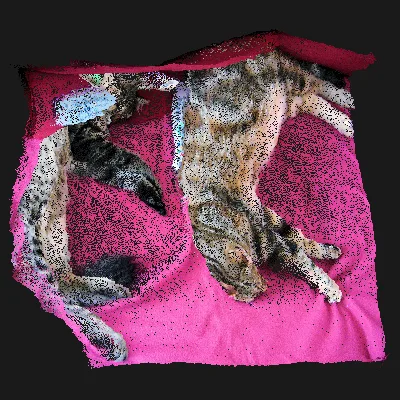
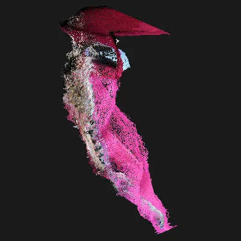
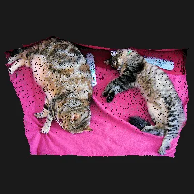
사진 한 장으로 만든 3D는 눈·입이 움푹 파입니다. 정면 그림의 얼굴을 매끈한 판으로 만들어 메시 얼굴에 붙입니다.
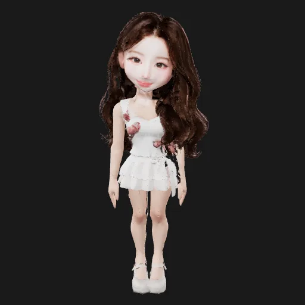
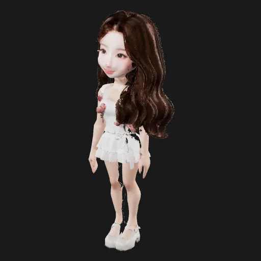
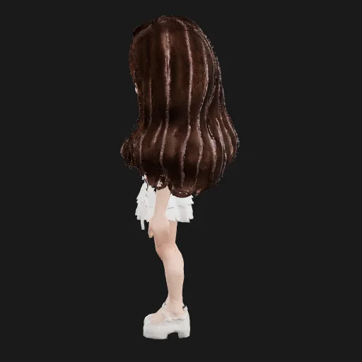
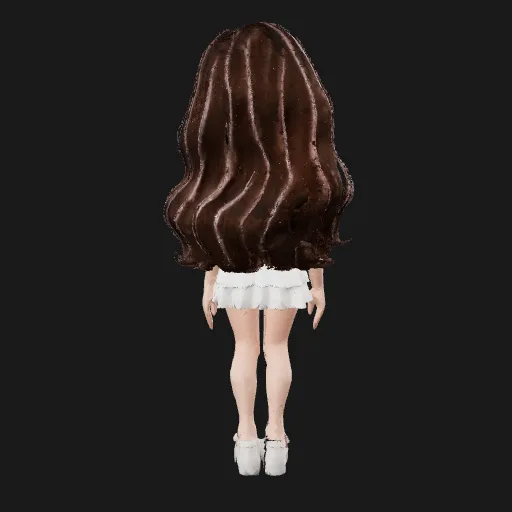
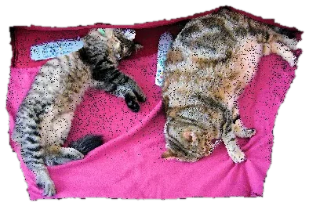